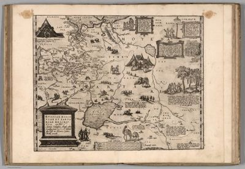

Description of Russia, Muscovy and Tartary, by Jenskinson and Ortelius, 1570. Image: David Rumsey Map Collection. One of the 137 maps of Tartary in the TARTARY Project's collection at HKUST, catalogued on tartary.vercel.app. Its texts have not been transcribed yet.